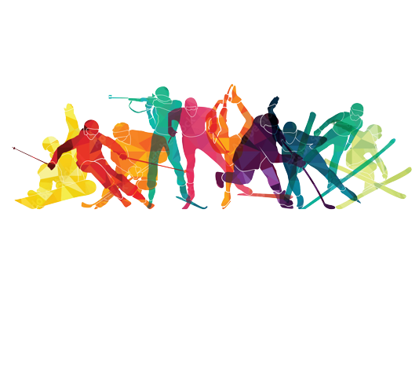

Zimowe Igrzyska Olimpijskie
Zimowe IO to międzynarodowe zawody sportowe organizowane co 4 lata przez Międzynarodowy
Komitet Olimpijski. Pierwsze takie igrzyska zorganizowano we Francji w 1924 roku i aż do 1992
roku były rozgrywane w tym samym roku kalendarzowym co letnie igrzyska olimpijskie. Na
pierwszych ZIO były rozgrywane dyscypliny takie jak: Biegi narciarskie, kombinacja norweska,
bobsleje, łyżwiarstwo figurowe, curling, łyżwiarstwo szybkie, hokej na lodzie, skoki narciarskie.
Ciekawostką jest, że na I zimowych igrzyskach brała udział również reprezentacja Polski. W 1994
roku w norweskim Lillehammer XVII Zimowe IO odbyły się w innym terminie, była to próba
wyjścia zimowych igrzysk z cienia, rozgrywanej w tym samym roku, większej i popularniejszej
letniej edycji olimpijskich zmagań. Pomysłodawcą przesunięcia terminu ZIO był ówczesny szef
działu sportowego amerykańskiej stacji ABC, Denis Swanson, który widział w tej zmianie
możliwość zwiększenia zysków ze sprzedaży praw telewizyjnych. Kraj Fiordów z rozmachem
przygotował sportowe areny, o których pisał cały świat. Szczególną uwagę zwracały zwłaszcza hala
łyżwiarska Vikingskipet w Hamar, mająca kształt odwróconej łodzi wikingów, a także hala
hokejowa w Gjoevik, którą wybudowano w... jaskini.
